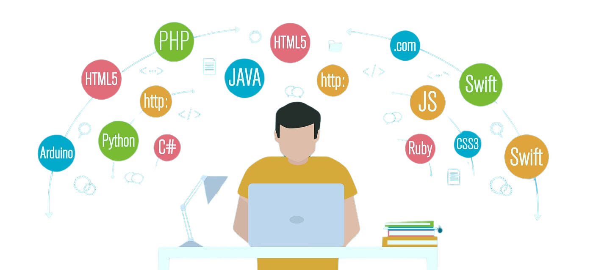

About me
I'm Niel Haldane G. Ramos, a fourth-year Computer Science major at Holy Angel University in the Philippines. My passion for technology and problem-solving has driven me to pursue a career in software development. Throughout my studies, I have gained a solid foundation in programming languages, algorithms, and software engineering principles. I thrive on the challenges of coding and enjoy creating efficient, user-friendly applications that can make a positive impact on people's lives.
As I approach graduation, I am eager to apply my skills in real-world projects and collaborate with others in the tech industry. My goal is to become a proficient software developer who can contribute to innovative solutions that address everyday challenges. I am excited about the future of technology and the endless possibilities it offers for growth and creativity in my career.
Technical Skills
42%
Java
62%
Python
34%
HTML/CSS
57%